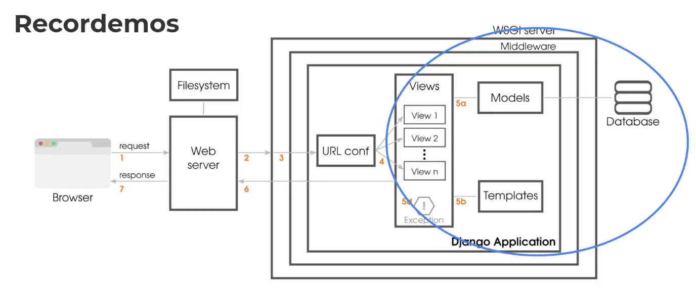
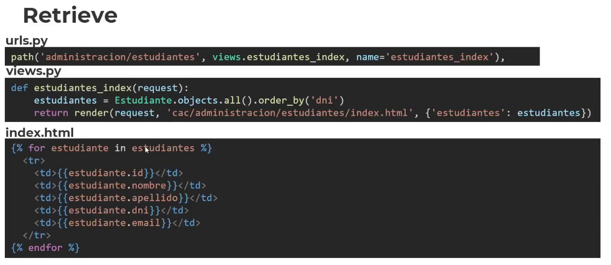
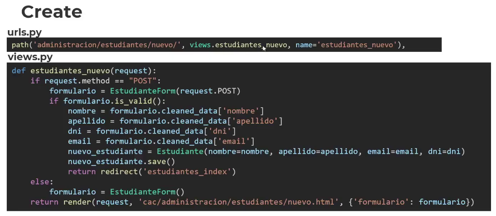
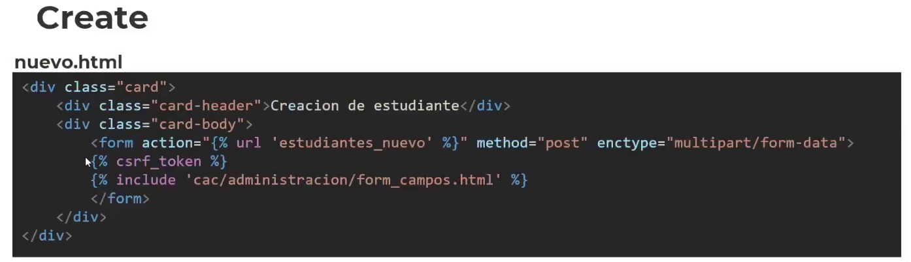
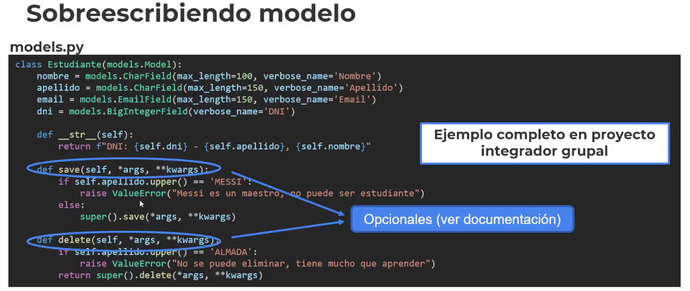
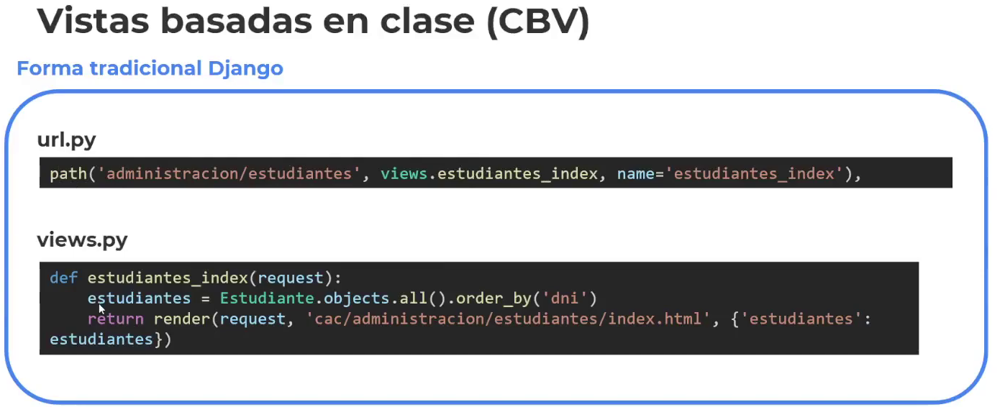
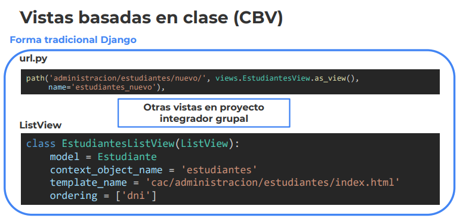

Desarrollo Django
1. Recordemos

Cada aplicación tiene sus propios modelos.. Se pueden relacionar a través de las vistas.
Por ejemplo, una aplicación para perfiles.. Con sus detalles.
CRUD: -> ABM alta, baja, modificación.
Create
Retrieve -> Consultar
Update
Delete
Crud sobre los elementos de nuestro modelo.
2. Retrieve

Vemos la urls.. El view y el index, trabajando en conjunto.
DjangoAdmin es más sencillo para realizar la administración.
3. Create
A través de los formularios.. Al igual para el update


Creamos el formulario en el nuevo.html, el template que tiene el form, que apunta con el action.
--- Ejemplo:
Clase 23... Armamos un admin para visualizarlo.
Las clases se diferencian para la sección de administración y para la sección pública.
Ambas aplicaciones estan dentro del proyecto separadas en el template.. Cada app tiene su propia base.
En el models.py de nuestra app cac.. Sobreescribimos el método str y además el save y el delete..
De esta manera, reescrbirimos o Sobreescribimos los métoodos Crud para el estudiante
from ast import mod
from email.policy import default
from tabnanny import verbose
from django.db import models
class Estudiante(models.Model):
nombre = models.CharField(max_length=100, verbose_name='Nombre:')
apellido = models.CharField(max_length=150, verbose_name='Apellido:')
email = models.EmailField(max_length=150, verbose_name='Email:', null=True, default=None)
dni = models.BigIntegerField(verbose_name='DNI:')
# cursos = models.ManyToManyField(Curso)
def __str__(self):
return f"DNI: {self.dni} - {self.apellido}, {self.nombre}"
def save(self, *args, **kwargs):
if self.apellido.upper() == 'MESSI':
raise ValueError("Messi es un maestro, no puede ser estudiante") -> No podremos guardar un estudiante como MESSI
else:
super().save(*args, **kwargs)
def delete(self, *args, **kwargs):
if self.apellido.upper() == 'ALMADA':
raise ValueError("No se puede eliminar, tiene mucho que aprender")
return super().delete(*args, **kwargs)
En el views.py...
def estudiantes_index(request):
estudiantes = Estudiante.objects.all().order_by('dni') -> Manejamos nuestro manager sobre el modelo Estudiante.. El .objects es el Manager.
return render(request, 'cac/administracion/estudiantes/index.html', {'estudiantes': estudiantes})
estudiantes = Estudiante.objects.all().selected_related('Curso').order_by('dni') -> selected_related podríamos traer data relacionada.
para acceder a la data relacionada, deberíamos hacer..
- estudiante.cursos.first() -> De esta manera accedemos a la data en relación
El queryset es LAZY -> Es decir va en el último instante a la base de datos
- Cuando sea necesaria la data,
Para el index.html del estudiante...
{% for estudiante in estudiantes %}
< tr>
< td>{{estudiante.id}}
< td>{{estudiante.nombre}}
< td>{{estudiante.apellido}}
< td>{{estudiante.dni}}
< td>{{estudiante.email}}
< td>
< a href="{% url 'estudiantes_editar' estudiante.id %}" title="Editar" class="btn btn-warning">< i class="fas fa-pencil">< /i>< /a> -> Para editar
< a href="{% url 'estudiantes_eliminar' estudiante.id %}" title="Eliminar" class="btn btn-danger">< i class="fas fa-trash">< /i>< /a> -> Apunta a esa url con el parámetro como id, para eliminar
< /td>
< /tr>
{% endfor %}
4. Sobreescribiendo modelo

5. ¿Qué son las Vistas Basadas en Clases?
Las vistas basadas en clases proporcionan una forma alternativa de
implementar vistas como objetos de Python en lugar de funciones. No
reemplazan las vistas basadas en funciones, pero tienen ciertas diferencias
y ventajas en comparación con las vistas basadas en funciones:
• La organización del código relacionado con métodos HTTP específicos (
GET, POST, etc.) puede abordarse mediante métodos separados en lugar
de bifurcaciones condicionales.
• Las técnicas orientadas a objetos, como mixins (herencia múltiple), se
pueden usar para factorizar el código en componentes reutilizables.
Heredamos esas clases y las sobreescribimos..
+ Organizado y mejor orden.
6. Vistas basadas en clase (CBV)
--- Ejemplo Práctico
Desde el views.py..
from django.views.generic import ListView -> Importamos
class EstudiantesListView(ListView): -> Armamos la vista
model = Estudiante -> Le indicamos el contexto
context_object_name = 'estudiantes' -> Marcamos el contexto..
template_name = 'cac/administracion/estudiantes/index.html' -> Lo asociamos al html
# ordering = ['dni']
Ahora desde el urls.py
path('administracion/estudiantes', views.EstudiantesListView.as_view(), name='estudiantes_index'), -> Con as_view llamamos al template.
Ahora desde el index.Html, apuntamos al nombre del contexto..
{% for estudiante in estudiantes %}
< tr>
< td>{{estudiante.id}}< /td>
< td>{{estudiante.nombre}}< /td>
< td>{{estudiante.apellido}}< /td>
< td>{{estudiante.dni}}< /td>
< td>{{estudiante.email}}< /td>
< td>
< a href="{% url 'estudiantes_editar' estudiante.id %}" title="Editar" class="btn btn-warning">< i class="fas fa-pencil">< /i>< /a>
< a href="{% url 'estudiantes_eliminar' estudiante.id %}" title="Eliminar" class="btn btn-danger">< i class="fas fa-trash">< /i>< /a>
< /td>
< /tr>
{% endfor %}
También pordemos asociar el EstudiantesView lo asociamos con el Form:
Ahora en el views.py..
class EstudiantesView(View):
form_class = EstudianteForm -> Armamos el form..
template_name = 'cac/administracion/estudiantes/nuevo.html'
def get(self, request, *args, **kwargs): -> Podemos sobrescribir el metodo get y post
form = self.form_class() * Nombramos al form que armamos.
return render(request, self.template_name, {'formulario': form})
def post(self, request, *args, **kwargs):
form = self.form_class(request.POST)
if form.is_valid():
try:
form.save()
except ValueError as ve:
form.add_error('apellido', str(ve))
else:
return redirect('estudiantes_index')
return render(request, self.template_name, {'formulario': form})
Ahora de esta manera, armando por clase, queda más orientado a objetos..

